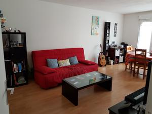
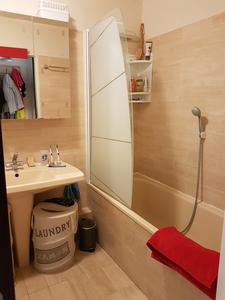
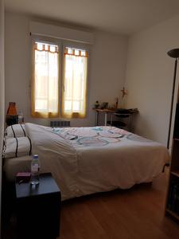

Salon / Salle à manger
Le salon est une belle pièce rectangulaire avec un canapé, une table basse, une télévision, une table et des étagères. Le sol est un parquet flottant. Deux radiateurs électriques modernes assurent le confort thermique de la pièce.
Cuisine
La vaisselle et les ustensiles sont fournis. Sol en carrelage.
Équipement
- Four programmable équipé de plaques vitrocéramiques
- Lave linge (lavante séchante)
- Frigo avec compartiment congélateur
- Micro ondes
- Cafetière
- Bouilloire
- Grille pain
Salle de bain / Toilettes
La salle de bain contient un lavabo et une baignoire. Un rangement avec miroir se trouve au dessus du lavabo. La pièce contient également un grand placard intégré. WC indépendant avec lave-mains. Les deux pièces ont un sol en carrelage.
Chambre
La chambre contient un lit (140x190) et une armoire. Des étagères intégrées sont fermées par des portes miroirs coulissantes.
